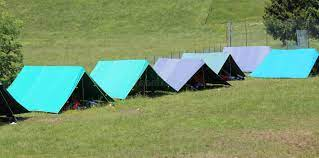
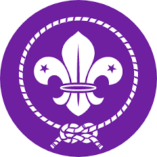
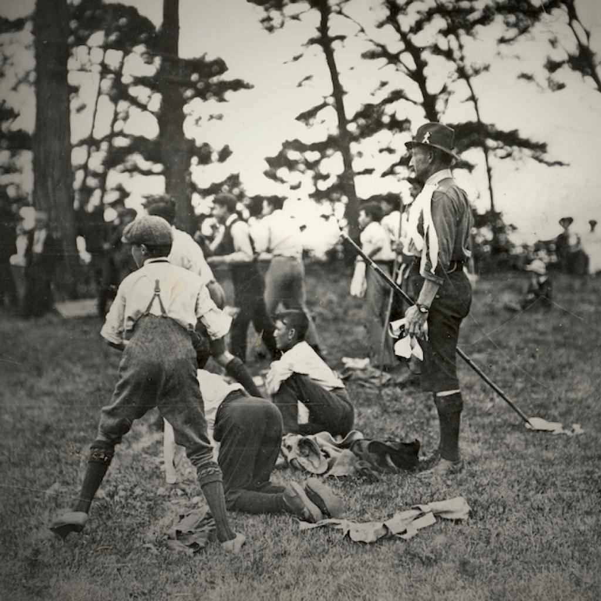
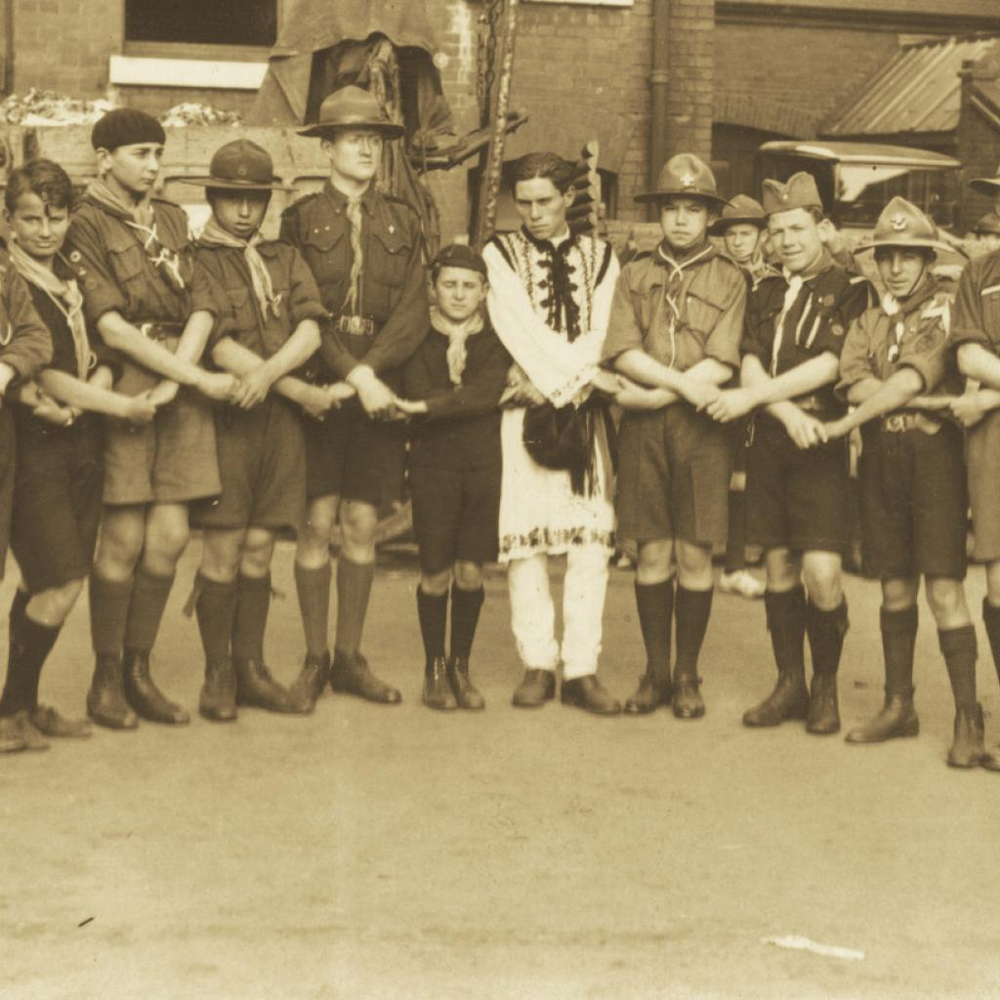

Scout History
More than 500 million young people and adults have taken part in Scouting since its inception over a century ago. Each joined the Movement to be active citizens and create positive change in their communities.
Today, Scouting is the world's leading educational youth movement with over 57 million Scouts in over 200 countries and territories worldwide. Through its unique combination of education, adventure and fun, Scouting continues to be an inspiration for young people to become active citizens who are engaged in creating a better and more sustainable world.
1907-1908

Early beginings
- Scouting began as a programme for boys aged 11 to 18.
- 1907: The first experimental camp organised by Robert Baden-Powell with 20 boys at Brownsea Island, United Kingdom was a great success.
- 1908: Baden-Powell published “Scouting for Boys”, which was an immediate hit and has since sold over 100 million copies.
1909-1918
Expansion of the scout movement
- 1909: "Scouting for Boys" was translated into five languages. It produced a Movement that quickly adopted the name “The Boy Scouts”.
- 1909: A Scout rally in London attracted more than 11,000 Scouts.
- 1910: Baden-Powell started the Girl Guides under the leadership of his sister, Agnes.
- 1914: The Patrol System was established to ensure the stability of Scouting through World War I, as Patrol Leaders volunteered in place of adult leaders.
- 1916: Cub Scouts was started for boys under the age of 11, supported by the publication of the “Wolf Cub’s Handbook” and using Rudyard Kipling’s “Jungle Book” as a framework.
- 1918: Rover Scouts was formed for older boys and young adults.
1919-1922
Scouting’s World Events and Governance
- 1920: The first World Scout Conference (then known as the International Scout Conference) took place during the first World Scout Jamboree in London, United Kingdom, with 33 National Scout Organizations in attendance.
- 1920: The World Scout Bureau (then known as the Boy Scouts International Bureau) was established in London, United Kingdom.
- 1922: The 2nd World Scout Conference was held Paris, France, with 31 National Scout Organizations represented. Global membership stood at just over 1 million Scouts.
- 1922: The first World Scout Committee (then Boy Scouts International Committee) was elected.

1914-1945
The World Wars
- Between the two world wars, Scouting continued to flourish, except in totalitarian regions where Scouting activities were banned. In occupied countries and in those with totalitarian regimes, Scouting continued in secret with Scouts playing important roles in the resistance and underground movements.
- Scouts supported their countries through the world wars by feeding the hungry and helping the injured. In some places, Seas Scouts acted as coast guards.